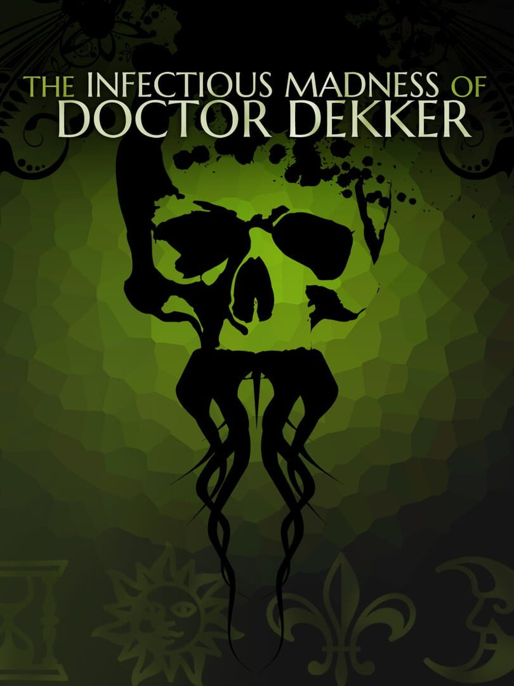

The Infectious Madness of Doctor Dekker
The Infectious Madness of Doctor Dekker
Details
|  | |
| Playtime | 10h 33m 0s |
| Last Activity | 2022-07-16 0:36:01 |
| Added | 2023-08-11 0:29:07 |
| Modified | 2023-08-11 0:45:52 |
| Completion Status | Completed |
| Library | Steam |
| Source | Steam |
| Platform | PC (Windows) |
| Release Date | 2017-05-19 |
| Community Score | 65 |
| Critic Score | 80 |
| User Score | |
| Genre | Adventure Indie Puzzle Simulator |
| Developer | D'Avekki Studios |
| Publisher | D'Avekki Studios Wales Interactive |
| Feature | Single Player |
| Links | Twitter Official Steam GOG Twitch |
| Tag | |
Description
YOU are a psychiatrist, trying to solve a murder whilst treating the unusual patients of the recently deceased Doctor Dekker - but nothing is as it seems.
Type any question - and your patients will reply in full screen video.
They'll have questions for you too but be careful what you say. Your words will determine their eventual fates, and your own!
WARNING - This game contains mature themes and psychological horror (including sexual themes, violence and suicide) and by its very nature is open to wide interpretation - so although not originally intended, some topics such as rape and parricide can also be inferred. Recommended for adults only.
Finding out who killed Dr Dekker is only one part of the puzzle; working out how to fix the chaos he left behind will be so much trickier… As well as providing clues to the murder, each patient has their own bizarre problem they need your help with – from time manipulation and re-animated loved ones to horrors under the sea.
Complete with an atmospheric soundtrack, The Infectious Madness of Doctor Dekker invites you to explore the shadow reality that your patients inhabit – a world full of paranormal strangeness and horrors that go bump in your head, where all you have to rely on is your own mind.
Just try not to lose it...
Aislinn De’Ath..................Marianna
Bianca Beckles-Rose........Jaya
Dom Lister......................Nathan
Helen Jenkinson..............Elin
Helga Ragnars................Claire
Millin Thomas..................Bryce
Mark Kitto.......................Professor Alderby
and guest starring John Guilor as Professor Warwick.
Additional patients played by ...
Carolyn English, Catherine Stacey, John Shields and Rosie Hefferon.
Directed by Tim Cowles.
Note : Steam overlay is only available on the Windows platform for this game.
Type any question - and your patients will reply in full screen video.
They'll have questions for you too but be careful what you say. Your words will determine their eventual fates, and your own!
MAIN FEATURES
- FMV! - 1600+ full screen HD video responses
- FREE TEXT INPUT - Ask whatever you want, type questions, phrases or just keywords.
- SUGGESTED QUESTIONS - No keyboard? No problem. Pick from our suggested list.
- MULTIPLE ENDINGS - Find out whodunit, and what happens to you and your patients...
- MULTIPLE STORIES - 6 main suspects and 5 side-quests inc. John Guilor (Contradiction)
- RANDOM MURDERER - Chosen at the start of the game to combat spoilers
- SIMPLE UI - View evidence, make notes, watch replays, see your question history
- ACHIEVEMENTS - Steam achievements and a dynamic descriptive rating system
- GUINNESS WORLD RECORD - for "The most Full Motion Video (FMV) in a videogame"
WARNING - This game contains mature themes and psychological horror (including sexual themes, violence and suicide) and by its very nature is open to wide interpretation - so although not originally intended, some topics such as rape and parricide can also be inferred. Recommended for adults only.
FULL DETAILS
The Infectious Madness of Doctor Dekker is a Lovecraftian FMV murder mystery, which gives players full freedom to question suspects by typing their own questions instead of picking them from a predetermined list. There are no point and click puzzles to solve, just questions to ask and evidence to inspect.Finding out who killed Dr Dekker is only one part of the puzzle; working out how to fix the chaos he left behind will be so much trickier… As well as providing clues to the murder, each patient has their own bizarre problem they need your help with – from time manipulation and re-animated loved ones to horrors under the sea.
Complete with an atmospheric soundtrack, The Infectious Madness of Doctor Dekker invites you to explore the shadow reality that your patients inhabit – a world full of paranormal strangeness and horrors that go bump in your head, where all you have to rely on is your own mind.
Just try not to lose it...
CREDITS
You.............................The DoctorAislinn De’Ath..................Marianna
Bianca Beckles-Rose........Jaya
Dom Lister......................Nathan
Helen Jenkinson..............Elin
Helga Ragnars................Claire
Millin Thomas..................Bryce
Mark Kitto.......................Professor Alderby
and guest starring John Guilor as Professor Warwick.
Additional patients played by ...
Carolyn English, Catherine Stacey, John Shields and Rosie Hefferon.
Directed by Tim Cowles.
Note : Steam overlay is only available on the Windows platform for this game.